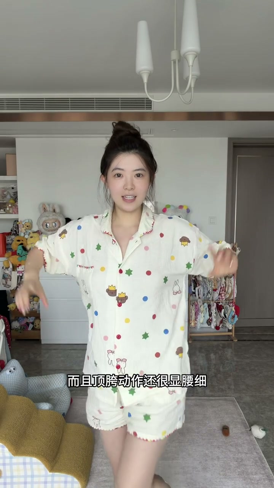
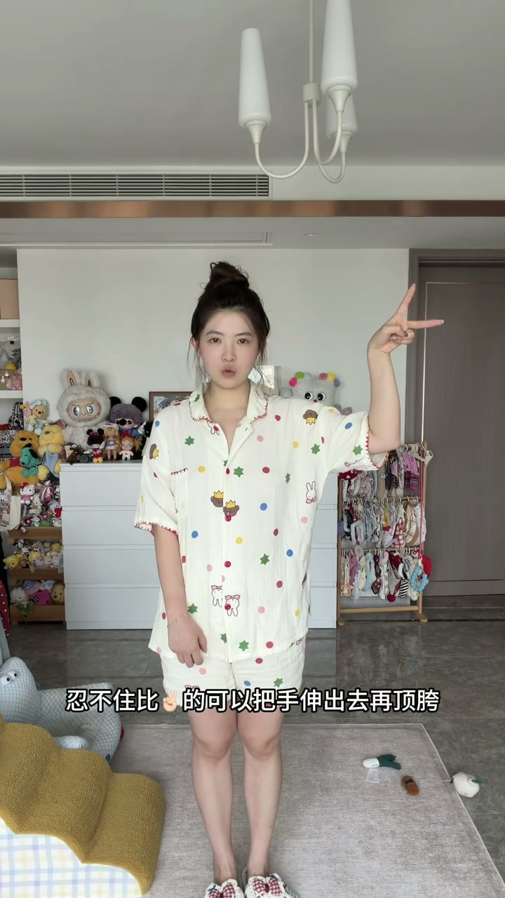
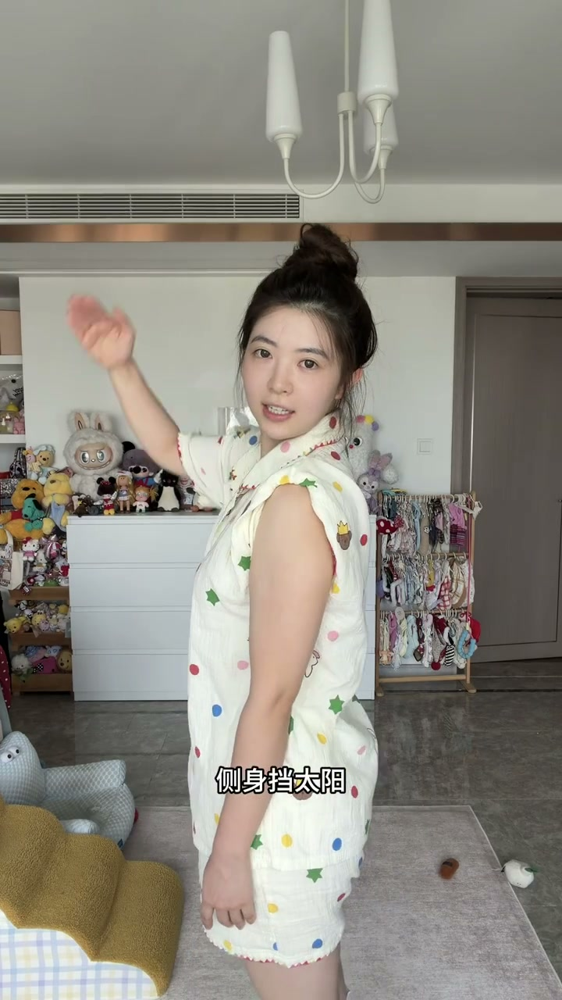
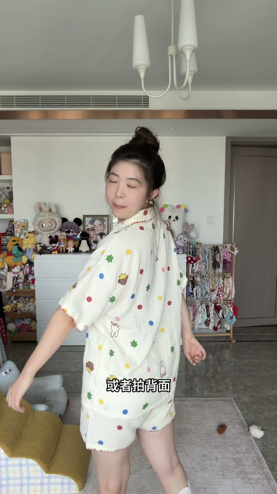
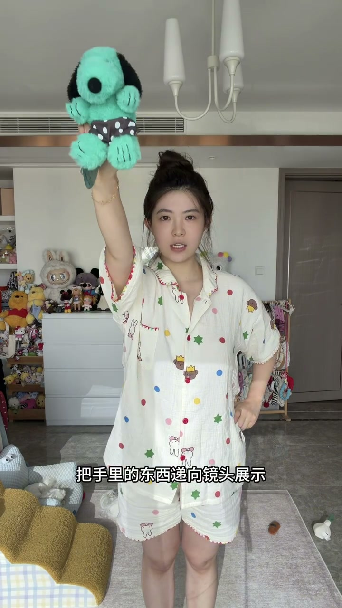
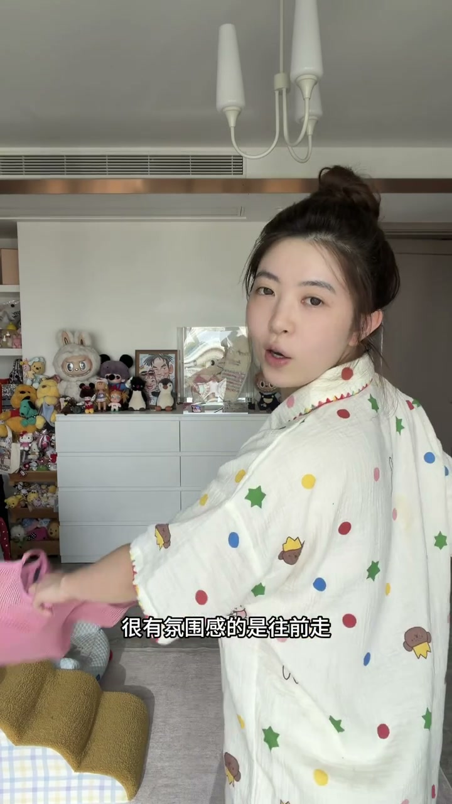

顶胯：最基础的活人感
00:00出去玩拍照，把拘谨的站姿换成有动作的——顶胯就是最基础的一招。
00:03而且顶胯动作还很显妖气——身体有S型折线，显腿长、有味道。

比耶+顶胯：想比耶也能生动
00:08忍不住比耶的，可以把手伸出去再顶胯——稍稍改变就更生动。比耶不是问题，问题是在腰边比耶。

侧身挡太阳、背面张开双手
00:14侧身挡太阳：然后这个肩膀要顶起来，手臂打开——借挡太阳的姿势摆出线条。
00:19或者拍背面张开双手，像拥抱景点，背影也有张力。


递物向前倾：0.5倍广角
00:22把手里的东西递向镜头展示，人要往前倾，打开0.5倍广角——近大远小，手长脸小，画面有纵深感。

往前走回头看：氛围感天花板
00:28很有氛围感的是往前走回头看抓拍——像旅行中被叫住回头，自然不刻意，比任何摆姿都有“活人感”。

游客照的活人感不在姿势多少，在于动起来——顶胯、递物、回头，让照片像生活的一帧而不是摆拍。